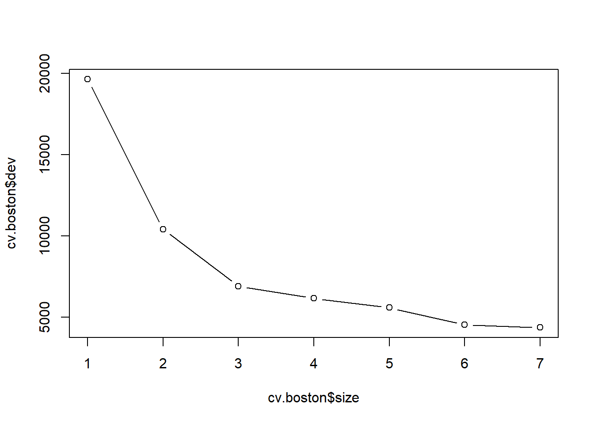
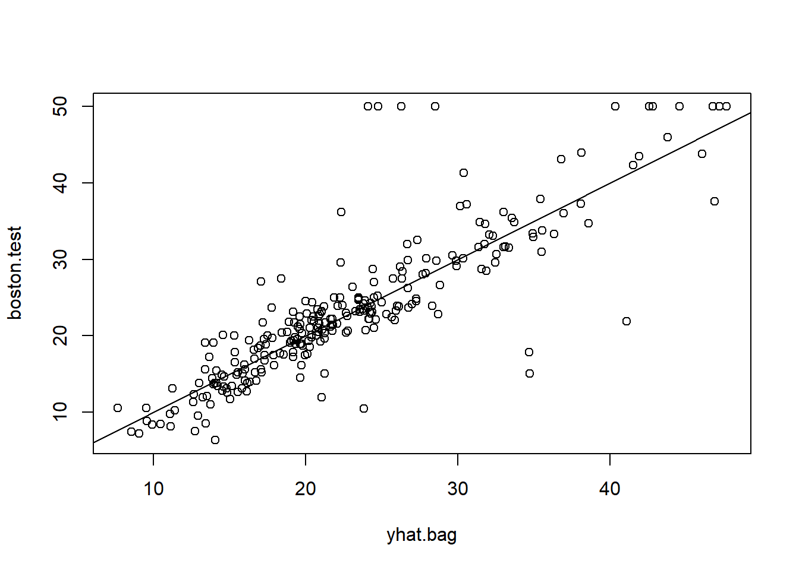

Random Forest and Examples
Mu He
9/18/2021
Random Forest
Definition a random forest
Flowchart of a Random Forest Alogrithm
Examples in R
library(randomForest)## randomForest 4.6-14## Type rfNews() to see new features/changes/bug fixes.library(MASS)
library(tree)## Registered S3 method overwritten by 'tree':
## method from
## print.tree clilibrary(gbm)## Loaded gbm 2.1.8library(e1071)
par(mfrow=c(1,1))
# Plot for M/3 explanation
n<-10:1000
plot(n,((n-1)/n)^n,typ="l")
dev.print(device=postscript, "M3.eps", onefile=FALSE, horizontal=FALSE)## png
## 2### Boston example, based on example from James et al.(2013)
library(randomForest)
library(MASS)
library(tree)
# First, a tree
#?Boston
set.seed(1)
train = sample(1:nrow(Boston), nrow(Boston)/2)
tree.boston=tree(medv~.,Boston,subset=train)
summary(tree.boston)##
## Regression tree:
## tree(formula = medv ~ ., data = Boston, subset = train)
## Variables actually used in tree construction:
## [1] "rm" "lstat" "crim" "age"
## Number of terminal nodes: 7
## Residual mean deviance: 10.38 = 2555 / 246
## Distribution of residuals:
## Min. 1st Qu. Median Mean 3rd Qu. Max.
## -10.1800 -1.7770 -0.1775 0.0000 1.9230 16.5800# Use cv tree to determine depth (i.e., to see if we might want to prune)
plot(tree.boston)
text(tree.boston,pretty=0)cv.boston=cv.tree(tree.boston)
plot(cv.boston$size,cv.boston$dev,type='b')
#This is how we would prune:
#prune.boston=prune.tree(tree.boston,best=5)
#yhat=predict(prune.boston,newdata=Boston[-train,])
yhat=predict(tree.boston,newdata=Boston[-train,])
boston.test=Boston[-train,"medv"]
plot(yhat,boston.test)
abline(0,1)
mean((yhat-boston.test)^2)## [1] 35.28688# Now, bagging and random forests
set.seed(1)
train = sample (1: nrow(Boston ), nrow(Boston )/2)
bag.boston=randomForest(medv~.,data=Boston,subset=train,mtry=13,importance=TRUE)
bag.boston##
## Call:
## randomForest(formula = medv ~ ., data = Boston, mtry = 13, importance = TRUE, subset = train)
## Type of random forest: regression
## Number of trees: 500
## No. of variables tried at each split: 13
##
## Mean of squared residuals: 11.33119
## % Var explained: 85.26yhat.bag = predict(bag.boston,newdata=Boston[-train,])
mean((yhat.bag-boston.test)^2)## [1] 23.4579plot(yhat.bag,boston.test)
abline(0,1)
importance(bag.boston)## %IncMSE IncNodePurity
## crim 21.162661 813.209885
## zn 5.838995 64.533390
## indus 2.410295 103.424195
## chas -2.847136 9.601055
## nox 16.137234 239.949497
## rm 53.339469 12383.514326
## age 18.048751 319.950062
## dis 8.004047 254.610410
## rad 2.376173 67.816948
## tax 9.718104 139.453388
## ptratio 6.159605 110.896968
## black 6.830931 227.195328
## lstat 48.633719 4846.537272varImpPlot(bag.boston)set.seed(1)
rf.boston=randomForest(medv~.,data=Boston,subset=train,mtry=4,importance=TRUE)
rf.boston##
## Call:
## randomForest(formula = medv ~ ., data = Boston, mtry = 4, importance = TRUE, subset = train)
## Type of random forest: regression
## Number of trees: 500
## No. of variables tried at each split: 4
##
## Mean of squared residuals: 10.23441
## % Var explained: 86.69yhat.rf = predict(rf.boston,newdata=Boston[-train,])
mean((yhat.rf-boston.test)^2)## [1] 18.11686importance(rf.boston)## %IncMSE IncNodePurity
## crim 15.372334 1220.14856
## zn 3.335435 194.85945
## indus 6.964559 1021.94751
## chas 2.059298 69.68099
## nox 14.009761 1005.14707
## rm 28.693900 6162.30720
## age 13.832143 708.55138
## dis 10.317731 852.33701
## rad 4.390624 162.22597
## tax 7.536563 564.60422
## ptratio 9.333716 1163.39624
## black 8.341316 355.62445
## lstat 27.132450 5549.25088varImpPlot(rf.boston)
rf.boston2=randomForest(medv~.,data=Boston,subset=train,mtry=6,importance=TRUE,ntree=500)
rf.boston2##
## Call:
## randomForest(formula = medv ~ ., data = Boston, mtry = 6, importance = TRUE, ntree = 500, subset = train)
## Type of random forest: regression
## Number of trees: 500
## No. of variables tried at each split: 6
##
## Mean of squared residuals: 9.926383
## % Var explained: 87.09yhat.rf = predict(rf.boston2,newdata=Boston[-train,])
mean((yhat.rf-boston.test)^2)## [1] 19.27921importance(rf.boston)## %IncMSE IncNodePurity
## crim 15.372334 1220.14856
## zn 3.335435 194.85945
## indus 6.964559 1021.94751
## chas 2.059298 69.68099
## nox 14.009761 1005.14707
## rm 28.693900 6162.30720
## age 13.832143 708.55138
## dis 10.317731 852.33701
## rad 4.390624 162.22597
## tax 7.536563 564.60422
## ptratio 9.333716 1163.39624
## black 8.341316 355.62445
## lstat 27.132450 5549.25088varImpPlot(rf.boston)# Boosting -- this is just the little bit from class, see wine.R for a fuller example of boosting
set.seed(1)
boost.boston=gbm(medv~.,data=Boston[train,],distribution="gaussian",n.trees=5000,interaction.depth=4)
summary(boost.boston)
## var rel.inf
## rm rm 43.9919329
## lstat lstat 33.1216941
## crim crim 4.2604167
## dis dis 4.0111090
## nox nox 3.4353017
## black black 2.8267554
## age age 2.6113938
## ptratio ptratio 2.5403035
## tax tax 1.4565654
## indus indus 0.8008740
## rad rad 0.6546400
## zn zn 0.1446149
## chas chas 0.1443986par(mfrow=c(1,2))
plot(boost.boston,i="rm")plot(boost.boston,i="lstat")yhat.boost=predict(boost.boston,newdata=Boston[-train,],n.trees=5000)
boston.test=Boston[-train,"medv"]
mean((yhat.boost-boston.test)^2)## [1] 18.84709### Hitters data
data(Hitters,package="ISLR")
head(Hitters)## AtBat Hits HmRun Runs RBI Walks Years CAtBat CHits
## -Andy Allanson 293 66 1 30 29 14 1 293 66
## -Alan Ashby 315 81 7 24 38 39 14 3449 835
## -Alvin Davis 479 130 18 66 72 76 3 1624 457
## -Andre Dawson 496 141 20 65 78 37 11 5628 1575
## -Andres Galarraga 321 87 10 39 42 30 2 396 101
## -Alfredo Griffin 594 169 4 74 51 35 11 4408 1133
## CHmRun CRuns CRBI CWalks League Division PutOuts
## -Andy Allanson 1 30 29 14 A E 446
## -Alan Ashby 69 321 414 375 N W 632
## -Alvin Davis 63 224 266 263 A W 880
## -Andre Dawson 225 828 838 354 N E 200
## -Andres Galarraga 12 48 46 33 N E 805
## -Alfredo Griffin 19 501 336 194 A W 282
## Assists Errors Salary NewLeague
## -Andy Allanson 33 20 NA A
## -Alan Ashby 43 10 475.0 N
## -Alvin Davis 82 14 480.0 A
## -Andre Dawson 11 3 500.0 N
## -Andres Galarraga 40 4 91.5 N
## -Alfredo Griffin 421 25 750.0 AHitters<-na.omit(Hitters)
Hitters$logSalary<-log(Hitters$Salary)
names(Hitters)## [1] "AtBat" "Hits" "HmRun" "Runs" "RBI"
## [6] "Walks" "Years" "CAtBat" "CHits" "CHmRun"
## [11] "CRuns" "CRBI" "CWalks" "League" "Division"
## [16] "PutOuts" "Assists" "Errors" "Salary" "NewLeague"
## [21] "logSalary"str(Hitters)## 'data.frame': 263 obs. of 21 variables:
## $ AtBat : int 315 479 496 321 594 185 298 323 401 574 ...
## $ Hits : int 81 130 141 87 169 37 73 81 92 159 ...
## $ HmRun : int 7 18 20 10 4 1 0 6 17 21 ...
## $ Runs : int 24 66 65 39 74 23 24 26 49 107 ...
## $ RBI : int 38 72 78 42 51 8 24 32 66 75 ...
## $ Walks : int 39 76 37 30 35 21 7 8 65 59 ...
## $ Years : int 14 3 11 2 11 2 3 2 13 10 ...
## $ CAtBat : int 3449 1624 5628 396 4408 214 509 341 5206 4631 ...
## $ CHits : int 835 457 1575 101 1133 42 108 86 1332 1300 ...
## $ CHmRun : int 69 63 225 12 19 1 0 6 253 90 ...
## $ CRuns : int 321 224 828 48 501 30 41 32 784 702 ...
## $ CRBI : int 414 266 838 46 336 9 37 34 890 504 ...
## $ CWalks : int 375 263 354 33 194 24 12 8 866 488 ...
## $ League : Factor w/ 2 levels "A","N": 2 1 2 2 1 2 1 2 1 1 ...
## $ Division : Factor w/ 2 levels "E","W": 2 2 1 1 2 1 2 2 1 1 ...
## $ PutOuts : int 632 880 200 805 282 76 121 143 0 238 ...
## $ Assists : int 43 82 11 40 421 127 283 290 0 445 ...
## $ Errors : int 10 14 3 4 25 7 9 19 0 22 ...
## $ Salary : num 475 480 500 91.5 750 ...
## $ NewLeague: Factor w/ 2 levels "A","N": 2 1 2 2 1 1 1 2 1 1 ...
## $ logSalary: num 6.16 6.17 6.21 4.52 6.62 ...
## - attr(*, "na.action")= 'omit' Named int [1:59] 1 16 19 23 31 33 37 39 40 42 ...
## ..- attr(*, "names")= chr [1:59] "-Andy Allanson" "-Billy Beane" "-Bruce Bochte" "-Bob Boone" ...Hitters<-Hitters[,-19]
names(Hitters)## [1] "AtBat" "Hits" "HmRun" "Runs" "RBI"
## [6] "Walks" "Years" "CAtBat" "CHits" "CHmRun"
## [11] "CRuns" "CRBI" "CWalks" "League" "Division"
## [16] "PutOuts" "Assists" "Errors" "NewLeague" "logSalary"set.seed(1)
train = sample (1: nrow(Hitters), nrow(Hitters)/2)
tree.hitters <- tree(logSalary ~ ., data = Hitters, subset=train)
summary(tree.hitters)##
## Regression tree:
## tree(formula = logSalary ~ ., data = Hitters, subset = train)
## Variables actually used in tree construction:
## [1] "CAtBat" "Assists" "Walks" "HmRun" "Division"
## Number of terminal nodes: 8
## Residual mean deviance: 0.1944 = 23.91 / 123
## Distribution of residuals:
## Min. 1st Qu. Median Mean 3rd Qu. Max.
## -1.4670 -0.2460 0.0038 0.0000 0.2132 2.4030plot(tree.hitters)
text(tree.hitters)
yhat=predict(tree.hitters,newdata=Hitters[-train,])
hitters.test=Hitters[-train,"logSalary"]
plot(yhat,hitters.test)
abline(0,1)mean((yhat-hitters.test)^2)## [1] 0.275614# Now, bagging and random forests
set.seed(1)
bag.hitters=randomForest(logSalary~.,data=Hitters,subset=train,mtry=19,importance=TRUE)
bag.hitters##
## Call:
## randomForest(formula = logSalary ~ ., data = Hitters, mtry = 19, importance = TRUE, subset = train)
## Type of random forest: regression
## Number of trees: 500
## No. of variables tried at each split: 19
##
## Mean of squared residuals: 0.2514973
## % Var explained: 67.7yhat.bag = predict(bag.hitters,newdata=Hitters[-train,])
mean((yhat.bag-hitters.test)^2)## [1] 0.1750964importance(bag.hitters)## %IncMSE IncNodePurity
## AtBat 7.26020380 3.3118887
## Hits -1.74250877 2.6813779
## HmRun 4.99876015 2.1273678
## Runs 6.92650711 2.1890659
## RBI 3.23777281 3.0187084
## Walks 8.00519716 3.5902254
## Years 7.54512973 1.3222528
## CAtBat 12.91107389 18.0087183
## CHits 9.82212081 12.3866514
## CHmRun 5.59286383 3.1458876
## CRuns 14.86923592 20.6911231
## CRBI 12.63812713 15.6724989
## CWalks 9.12974681 9.0983980
## League -0.08615830 0.1736580
## Division 0.31213577 0.1362073
## PutOuts 1.20674704 1.1597453
## Assists 0.78879314 0.7665019
## Errors -0.07427328 0.5192243
## NewLeague 0.21072397 0.1237044varImpPlot(bag.hitters)plot(yhat.bag,hitters.test)
abline(0,1)
set.seed(1)
rf.hitters=randomForest(logSalary~.,data=Hitters,subset=train,mtry=5,importance=TRUE)
rf.hitters##
## Call:
## randomForest(formula = logSalary ~ ., data = Hitters, mtry = 5, importance = TRUE, subset = train)
## Type of random forest: regression
## Number of trees: 500
## No. of variables tried at each split: 5
##
## Mean of squared residuals: 0.2435802
## % Var explained: 68.72yhat.rf = predict(rf.hitters,newdata=Hitters[-train,])
mean((yhat.rf-hitters.test)^2)## [1] 0.1796161importance(rf.hitters)## %IncMSE IncNodePurity
## AtBat 5.36446661 3.6657072
## Hits 3.74747317 3.6856706
## HmRun 3.93054695 2.1896637
## Runs 5.17512756 2.6250355
## RBI 4.24151568 3.1925397
## Walks 7.67285241 3.6715738
## Years 8.11996800 3.8397646
## CAtBat 13.37862850 16.4216520
## CHits 12.51628261 15.1740994
## CHmRun 6.18618982 4.9753254
## CRuns 12.46371946 15.4218965
## CRBI 12.16966307 12.5002084
## CWalks 9.70728599 9.7808236
## League 1.16037977 0.1819858
## Division 0.68279716 0.1450699
## PutOuts 1.57928623 1.0987496
## Assists -0.47528239 0.8565811
## Errors 0.09964008 0.7053460
## NewLeague 2.44937229 0.1757951varImpPlot(rf.hitters)#A figure
M<-(1:20)*50
error<-M
for(m in M){
bag.hitters=randomForest(logSalary~.,data=Hitters,subset=train,mtry=19,importance=TRUE,ntree=m)
yhat.bag = predict(bag.hitters,newdata=Hitters[-train,])
error[m/50]<-mean((yhat.bag-hitters.test)^2)
}
bag<-error
for(m in M){
bag.hitters=randomForest(logSalary~.,data=Hitters,subset=train,mtry=9,importance=TRUE,ntree=m)
yhat.bag = predict(bag.hitters,newdata=Hitters[-train,])
error[m/50]<-mean((yhat.bag-hitters.test)^2)
}
rf4<-error
for(m in M){
bag.hitters=randomForest(logSalary~.,data=Hitters,subset=train,mtry=5,importance=TRUE,ntree=m)
yhat.bag = predict(bag.hitters,newdata=Hitters[-train,])
error[m/50]<-mean((yhat.bag-hitters.test)^2)
}
rf6<-error
plot(M,bag,typ="l",col=2,xlim=c(0,1000),ylab="test error",ylim=c(0.145,0.2))
lines(M,rf4,typ="l",col=1)
lines(M,rf6,typ="l",col=4)
legend(1,0.165,c("m=19 (bagging)","m=9","m=5"),col=c(2,1,4),pch=c(2,3,4))
# Boosting for Hitters data --- this is the little bit from class; see wine.R data for a fuller example of boosting
set.seed(1)
boost.hitters=gbm(logSalary~.,data=Hitters[train,],distribution="gaussian",n.trees=5000,interaction.depth=4)
summary(boost.hitters)## var rel.inf
## CRBI CRBI 25.2977851
## PutOuts PutOuts 7.1116163
## CHmRun CHmRun 7.0615629
## CHits CHits 7.0541211
## Assists Assists 6.7865919
## CWalks CWalks 6.7637158
## CRuns CRuns 5.9402874
## RBI RBI 4.0395929
## HmRun HmRun 3.9852742
## Walks Walks 3.8762873
## Years Years 3.8625979
## AtBat AtBat 3.6221973
## CAtBat CAtBat 3.5911514
## Runs Runs 3.4584062
## Hits Hits 2.8939522
## Errors Errors 1.9371690
## Division Division 1.1253812
## League League 1.0560439
## NewLeague NewLeague 0.5362659yhat.boost=predict(boost.hitters,newdata=Hitters[-train,],n.trees=5000)
hitters.test=Hitters[-train,"logSalary"]
mean((yhat.boost-hitters.test)^2)## [1] 0.2837507### Iris data
names(iris)## [1] "Sepal.Length" "Sepal.Width" "Petal.Length" "Petal.Width"
## [5] "Species"set.seed(1)
train <- c(sample(1:50, 25), sample(51:100, 25), sample(101:150, 25))
tree.iris <- tree(Species ~ ., data = iris, subset=train,method="class")
summary(tree.iris)##
## Classification tree:
## tree(formula = Species ~ ., data = iris, subset = train, method = "class")
## Variables actually used in tree construction:
## [1] "Petal.Length" "Petal.Width"
## Number of terminal nodes: 4
## Residual mean deviance: 0.09479 = 6.73 / 71
## Misclassification error rate: 0.02667 = 2 / 75plot(tree.iris)
text(tree.iris)iris.test=iris[-train,"Species"]
iris.pred=predict(tree.iris,iris[-train,],type="class")
tab<-table(iris.test,iris.pred)
tab## iris.pred
## iris.test setosa versicolor virginica
## setosa 25 0 0
## versicolor 0 21 4
## virginica 0 1 241-classAgreement(tab)$diag## [1] 0.06666667classAgreement(tab)$crand## [1] 0.8154798# Now, bagging and random forests
set.seed(1)
bag.iris=randomForest(Species~.,data=iris,subset=train,mtry=4,importance=TRUE,type="class")
bag.iris##
## Call:
## randomForest(formula = Species ~ ., data = iris, mtry = 4, importance = TRUE, type = "class", subset = train)
## Type of random forest: classification
## Number of trees: 500
## No. of variables tried at each split: 4
##
## OOB estimate of error rate: 5.33%
## Confusion matrix:
## setosa versicolor virginica class.error
## setosa 25 0 0 0.00
## versicolor 0 23 2 0.08
## virginica 0 2 23 0.08iris.pred=predict(bag.iris,iris[-train,],type="class")
tab<-table(iris.test,iris.pred)
tab## iris.pred
## iris.test setosa versicolor virginica
## setosa 25 0 0
## versicolor 0 23 2
## virginica 0 1 241-classAgreement(tab)$diag## [1] 0.04classAgreement(tab)$crand## [1] 0.8841001set.seed(1)
rf.iris=randomForest(Species~.,data=iris,subset=train,mtry=3,importance=TRUE,type="class")
rf.iris##
## Call:
## randomForest(formula = Species ~ ., data = iris, mtry = 3, importance = TRUE, type = "class", subset = train)
## Type of random forest: classification
## Number of trees: 500
## No. of variables tried at each split: 3
##
## OOB estimate of error rate: 5.33%
## Confusion matrix:
## setosa versicolor virginica class.error
## setosa 25 0 0 0.00
## versicolor 0 23 2 0.08
## virginica 0 2 23 0.08iris.pred.rf=predict(rf.iris,iris[-train,],type="class")
tab<-table(iris.test,iris.pred.rf)
tab## iris.pred.rf
## iris.test setosa versicolor virginica
## setosa 25 0 0
## versicolor 0 23 2
## virginica 0 1 241-classAgreement(tab)$diag## [1] 0.04classAgreement(tab)$crand## [1] 0.8841001importance(rf.iris)## setosa versicolor virginica MeanDecreaseAccuracy
## Sepal.Length 0.00000 -2.871920 -0.1927267 -1.928877
## Sepal.Width 0.00000 -5.745376 1.1175273 -2.964702
## Petal.Length 22.03275 32.368649 30.8482956 36.767047
## Petal.Width 23.66448 26.470187 22.9210198 30.263067
## MeanDecreaseGini
## Sepal.Length 0.4490572
## Sepal.Width 0.6211415
## Petal.Length 26.9239773
## Petal.Width 21.3627306varImpPlot(rf.iris)